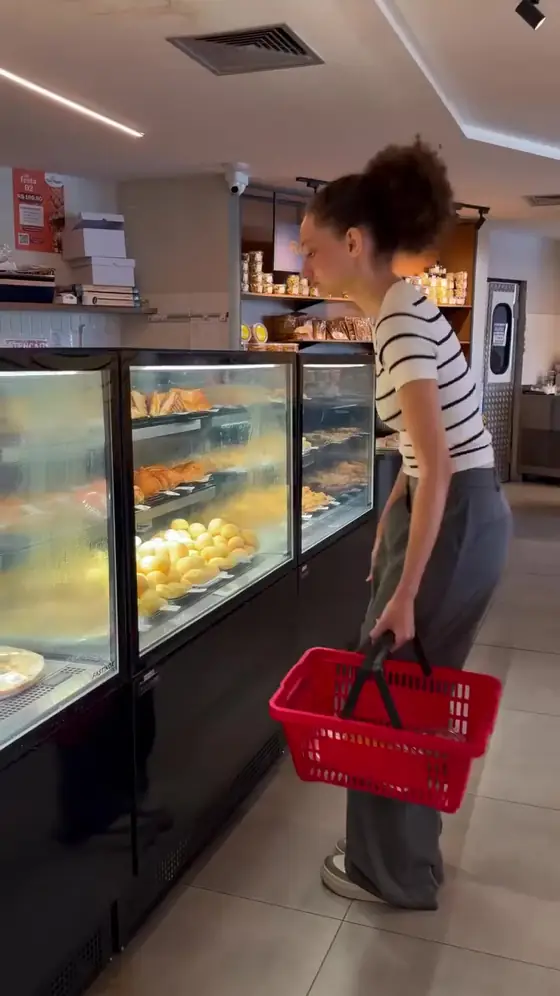
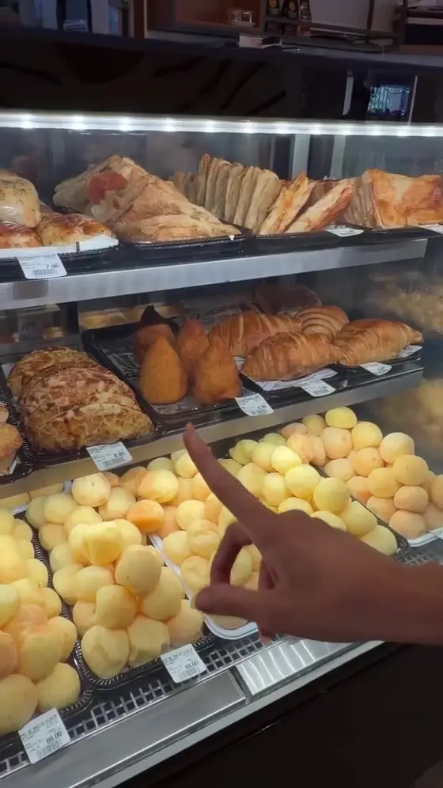
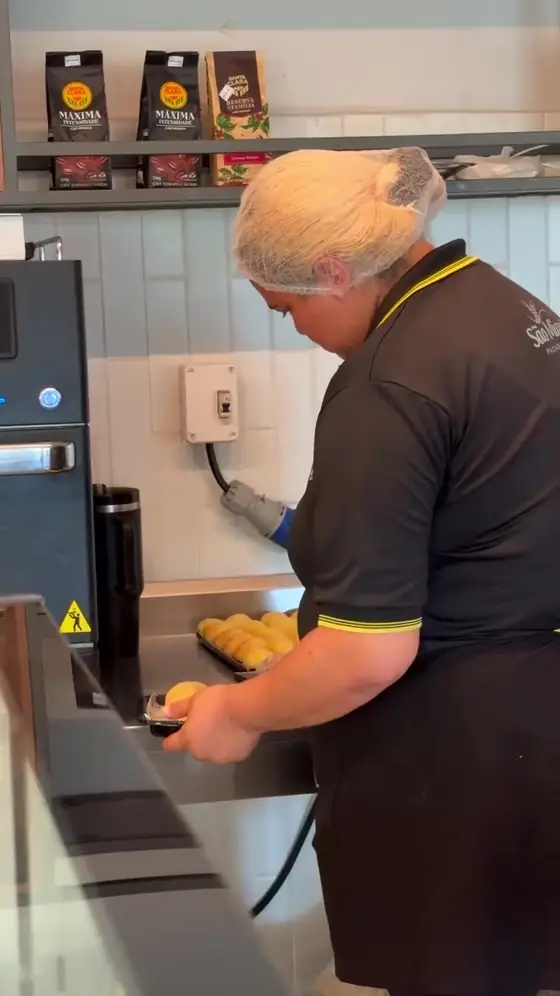
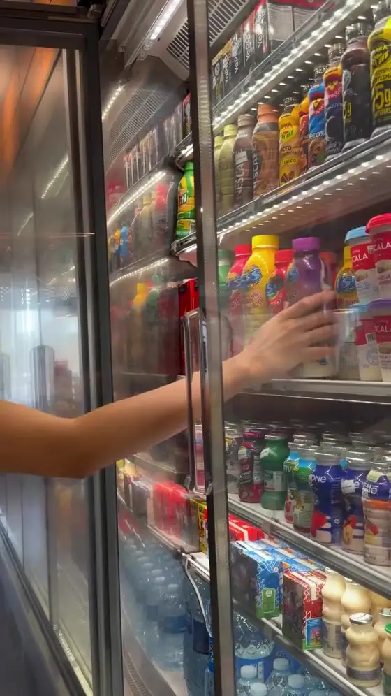
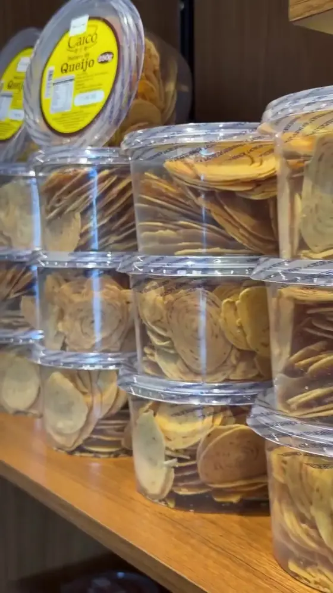
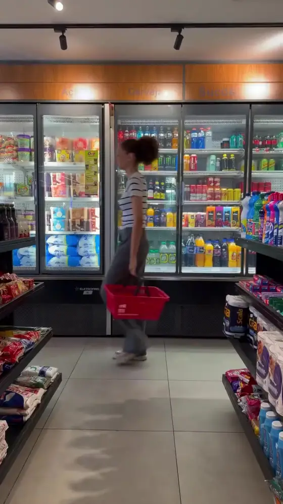
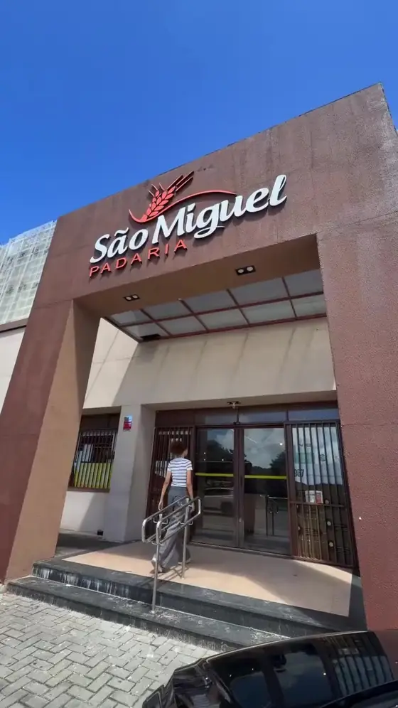
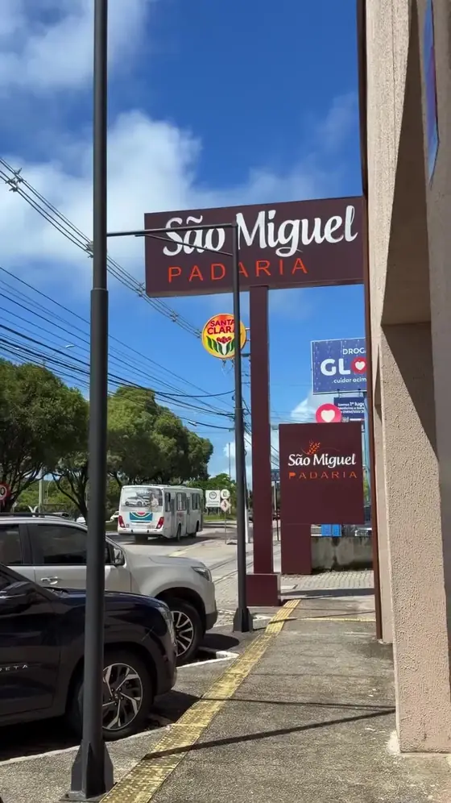

Tudo em um só lugar, desde 1967
Pão fresquinho, café da manhã, almoço, lanches e a mercearia para completar a compra.
Rua Jaguarari, 2507, Lagoa Nova Av. Eng. Roberto Freire, 1768, Capim Macio
Do café da manhã ao jantar
Café quente, pão na chapa, cuscuz e o que mais a manhã pedir. Para comer com calma ou levar no caminho do trabalho.
No salão e para levar
Comida de casa, servida todo dia, e prato quente para fechar a noite. Pergunte na loja ou veja no cardápio o que tem hoje.
No salão
Pão de queijo saindo do forno, salgados e doces da vitrine para a fome do meio da tarde.
No balcão e no cardápio online
Pães, bolos de forma e biscoitos em pote, para a mesa de casa.
No balcão e sob encomenda
Por dentro da loja
-
Um passeio de 12 segundos

A vitrine de salgados

Pão de queijo o dia inteiro

Pesado na hora

Bebida gelada
A mesa dos bolos

Biscoitos em pote

A mercearia
Encomende pelo WhatsApp
Escreva o que você precisa e a mensagem chega pronta no WhatsApp de encomendas. A equipe confirma valores, horário e forma de pagamento por lá.
Para pedir agora, use o cardápio online. É por lá que sai mais barato.
Pedir pelo cardápioUma família do sertão, uma padaria de Natal
A história começa em Santana do Matos, com Raimundo Miguel Ferreira e Maria de Araújo Ferreira. Ele vendia nos distritos o que a família produzia no sítio, até virar dono de uma padaria no centro da cidade.
De lá a São Miguel veio para a capital e ficou. A casa continua com a família, e muita gente que hoje compra o pão aqui vinha pela mão dos pais.
59 anos de forno aceso


Duas portas em Natal
Encomendas pelo WhatsApp (84) 99481-5161. Os horários de cada unidade ficam nos destaques do Instagram.